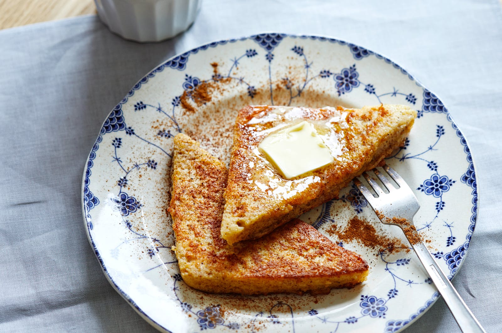

Keto French Toast

Description
This keto French toast recipe comes together in just 10 minutes, including the bread! Learn how to make low
carb French toast with just 2.5g net carbs, for a quick, healthy breakfast.
Ingredients
- 3 Slices Carbonaut Bread
- 1 Large Egg
- 1/8 Cup Walden Farms Pancake Syrup
- 1/3 Cup Unsweetened Almond Milk
- Stevia
- Cinnamon & Nutmeg
Steps
- Blend everything together but the bread.
- Soak the bread in the mixture and then fry it.
- Enjoy!